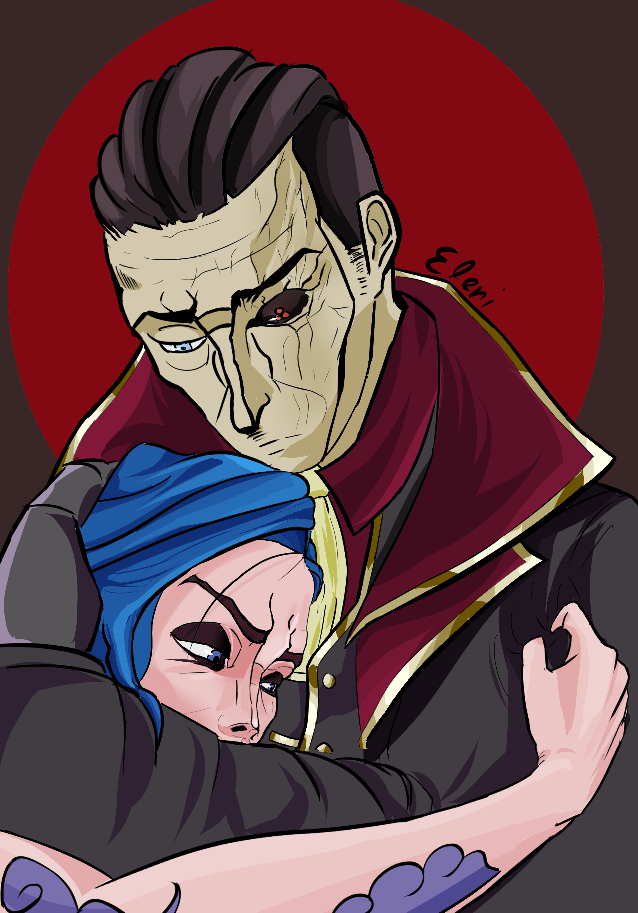
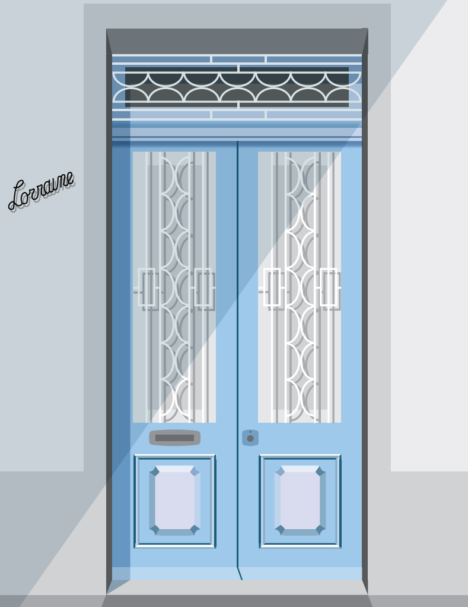
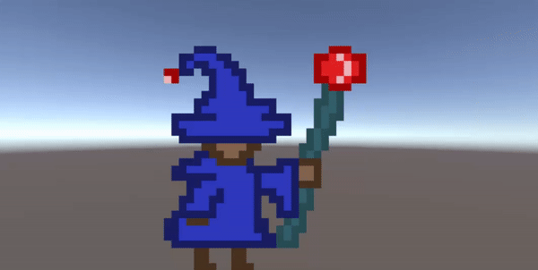

These are some of my favourite coursework assignments throughout DGA1019 and DGA1020.

Coursework #2 for DGA1019
- A simple lineart and colouring exercise with open ended theme.
- The assignment took place around November 2021, the same period Arcane show came out, hence the theme.

Coursework #1 for DGA1020
- A vector graphic inspired by Malta Doors
- This particular door can be found around Msida!

Coursework #3 for DGA1020
- A simple sprite animation done in Piskel
- This wizard's animations are: idle, walking, running, jumping, falling and dying. Can you spot them?